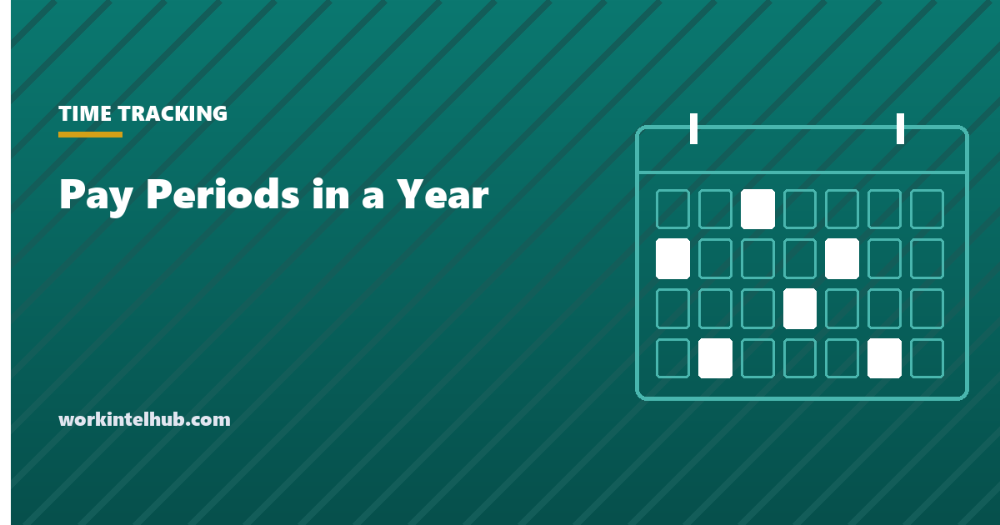

Pay Periods in a Year

Weekly pay gives 52 paychecks a year, bi-weekly 26, semi-monthly 24 and monthly 12. The complication is that 52 weeks is 364 days, and a year has 365 or 366, so the weekly and bi-weekly schedules drift. Every five or six years there are 53 of the payday weekday. A weekly schedule then pays 53 times, and a bi-weekly one 27 times if its cycle catches the extra day. 2027 begins on a Friday and has 53 of them, so employers paying bi-weekly on Fridays with a payday on 1 January 2027 face the 27-check year, and those paying weekly on Fridays the 53-check year.
The calculator counts the paydays for any year and first payday and shows what the extra period does to a salary. The rest of the page compares the schedules, explains the employer's three options for the extra check, covers the state laws that constrain the choice of schedule, and lists the hours per period each schedule implies.
Pay periods calculator
Weekly and bi-weekly counts depend on which weekday is payday and where the first payday falls; the calculator counts the actual paydays in the year. Nothing typed here leaves your browser.
The four schedules compared
| Schedule | Periods | Hours per period (40-hour week) | Suits | Drawback |
|---|---|---|---|---|
| Weekly | 52 (53 some years) | 40 | Hourly and shift workforces; construction, hospitality | Highest payroll processing cost; 52 runs a year |
| Bi-weekly | 26 (27 some years) | 80 | The most common US schedule; mixed hourly and salaried | Two months a year have three paydays, which complicates budgeting and benefit deductions |
| Semi-monthly | 24 | 86.67 | Salaried workforces; aligns with monthly accounting | Pay periods contain different numbers of workdays, and overtime for hourly staff must still be computed by workweek |
| Monthly | 12 | 173.33 | Executives, some salaried professionals | Illegal for many employees in many states; hard on employees' cash flow |
Bureau of Labor Statistics survey data has long put bi-weekly as the most common private schedule, used by around 43 per cent of businesses, with weekly second. Overtime is computed by workweek regardless of the pay period, so a semi-monthly employer with hourly staff has to track weeks that straddle two pay periods; the overtime calculator and the time card calculator both work at the workweek level for that reason.
The 27th (or 53rd) paycheck
The extra period arrives on a schedule that depends on the payday weekday and where the cycle falls. For bi-weekly Friday paydays, a 27-check year occurs when 1 January is a Friday, or in a leap year when it is a Thursday or Friday, and the cycle includes that first Friday. 2027 (1 January is a Friday) is the next such year for cycles anchored to 1 January; cycles anchored to 8 January get 26 as usual and meet their own 27-check year later. Weekly Friday schedules pay 53 times in any year with 53 Fridays, which 2027 also is.
Hourly employees are unaffected: they are paid for hours worked, and the extra check simply covers two more weeks of work. For salaried employees the employer has three options, and must choose one in advance and tell people:
- Pay the usual amount 27 times. Employees receive about 3.8 per cent more that year; the employer absorbs the cost. Simplest, most popular with employees, and the practice most employers choose, often framed as the salary being an hourly-equivalent rate that happens to produce more pay in a year with more pay periods.
- Divide the annual salary by 27. Each check is about 3.7 per cent smaller. Legally sound if the employment agreement states an annual salary, but it must be announced well ahead and cannot take any check below the exempt salary threshold ($684 a week federally, higher in several states; see the salary versus hourly guide).
- Pay 26 and skip one. Rare and disliked; effectively option 2 with a gap. Some employers instead shift the payday by a day to avoid the 27th check altogether.
Benefit deductions need attention under any option: a deduction set to collect an annual premium over 26 checks will over-collect in a 27-check year unless the 27th check is exempted. Retirement match limits, garnishment orders and salary-based bonuses are worth checking the same way. The work hours in a year page has the calendar counts behind all of this.
State rules on pay frequency
Federal law requires only that wages be paid on the regular payday for the period. State law sets the minimum frequency, and it varies. Most states require at least semi-monthly pay for most employees. Several (Arizona, Connecticut, Massachusetts, New Hampshire, New York for manual workers, Rhode Island, Vermont among them) require weekly or bi-weekly pay for some or all workers. A handful (Alabama, Florida, South Carolina) set no frequency at all. New York's requirement that manual workers be paid weekly has produced substantial class actions against employers paying bi-weekly, though a 2025 amendment limited damages for first violations. Several states also set a maximum lag between the end of the pay period and the payday, commonly seven to fifteen days.
The practical rule for a multi-state employer is that the schedule must satisfy the strictest state in which it has employees, or run different schedules by state. Changing the schedule requires notice, in some states written notice, and a transition plan for the gap it creates in employees' cash flow. The final paycheck laws page covers the separate timing rules at termination, and the minimum wage by state page the rates.
Key takeaways
- Weekly 52, bi-weekly 26, semi-monthly 24, monthly 12; weekly and bi-weekly schedules gain a period in years with 53 of the payday weekday.
- 2027 has 53 Fridays: bi-weekly Friday schedules anchored to 1 January pay 27 times, weekly Friday schedules 53 times.
- Hourly employees are unaffected. For salaried staff, pay the usual amount 27 times (most common), divide by 27 with notice, or shift the payday.
- Check benefit deductions, match limits and garnishments before a 27-check year.
- Bi-weekly is the most common US schedule; overtime is still computed by workweek under every schedule.
- State law sets minimum pay frequency, from weekly for some workers to none at all; a multi-state employer follows the strictest state or runs separate schedules.
Frequently asked questions
How many pay periods are in a year?
Weekly pay has 52, bi-weekly 26, semi-monthly 24 and monthly 12. Weekly and bi-weekly schedules gain one period, 53 or 27, in a year that contains 53 of the payday weekday, provided the pay cycle catches the first one. The calculator on this page counts the actual paydays for any year and first payday.
Is 2027 a 27 pay period year?
For bi-weekly schedules paid on Fridays with a payday on 1 January 2027, yes: 2027 begins on a Friday and contains 53 Fridays. Bi-weekly Friday schedules with their first 2027 payday on 8 January get the usual 26. Weekly Friday schedules pay 53 times in 2027.
What is the difference between bi-weekly and semi-monthly pay?
Bi-weekly is every two weeks, 26 times a year, with 80 hours per period at 40 hours a week and two months containing three paydays. Semi-monthly is twice a month on fixed dates, 24 times a year, with 86.67 hours per period and paydays that fall on different weekdays. Overtime is computed by workweek under both.
What happens to salary in a 27 pay period year?
The employer chooses in advance. Most pay the usual per-check amount 27 times, so salaried employees receive about 3.8 per cent more that year. Some divide the annual salary by 27, which reduces each check by about 3.7 per cent and requires notice. Hourly employees are simply paid for the extra two weeks of work.
How often does an employer have to pay employees?
Federal law only requires payment on the regular payday. State law sets the minimum: most states require at least semi-monthly pay, several require weekly or bi-weekly for some or all workers (New York for manual workers, Connecticut, Massachusetts, New Hampshire, Rhode Island, Vermont, Arizona), and a few set no frequency. Several states also cap the lag between period end and payday.
How many hours are in a pay period?
At 40 hours a week: 40 for weekly, 80 for bi-weekly, 86.67 for semi-monthly (2,080 divided by 24) and 173.33 for monthly (2,080 divided by 12). Actual hours in a semi-monthly period vary with the number of workdays it contains.